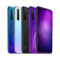

<!doctype html>
<html>

	<head>
		<meta charset="UTF-8">
		<title></title>
		<meta name="viewport" content="width=device-width,initial-scale=1,minimum-scale=1,maximum-scale=1,user-scalable=no" />
		<link href="../css/mui.min.css" rel="stylesheet" />
	</head>

	<body>
		
		<!--下拉刷新容器-->
		<div id="pullrefresh" class="mui-content mui-scroll-wrapper">
			<div class="mui-scroll">
		
				<!--已发布商品列表-->
				<ul id="myPublishUl" class="mui-table-view">
					
				</ul>
				
		
			</div>
		</div>
		
	</body>

</html>
<script src="../js/mui.min.js"></script>
<script src="../js/er.js"></script>
<script src="../js/jquery-3.5.0.js"></script>
<script>
	mui.init({
		pullRefresh: {
			container: '#pullrefresh',
			down: {
				auto: true,	//初始加载页面刷新一次
				style: 'circle',
				callback: pulldownRefresh
			}
		}
	})
	/**
	 * 已发商品页面初始化加载已发商品列表
	 */
	function loadMyCommodity() {
	    //初始化已发商品列表页号和每次加载数量
	    var cpno = 1;
	    var cpsize = 100;
	    //GET方法url
	    var url = getUrl() + "/api/v1/commodity_my?pno=" + cpno + "&psize=" + cpsize;
	    jQuery.ajax({
	    	method : "GET",
	    	url : url,
	    	contentType : "application/json;charset=utf-8",
	    	//data : JSON.stringify(data),
	    	headers : {
	    		"Authorization" : window.localStorage.getItem("token")
	    	},
	    	xhrFields : {
	    		withCredentials : true
	    	},
	    	success : function(result){
	    		
	    		console.log("code:"+result.code+" msg:"+result.msg);
	    		if(result.code == 200){
	    			console.log("已发布商品列表获取成功");
	    			//获取已发商品列表列表
	    			var commodityList = result.data.commodityList;
	    			//获取返回的收藏个数
	    			var n = commodityList.length;
	    			//console.log("length="+n);
	    			//获取ul
	    			var myPublishUl = document.getElementById("myPublishUl");
					myPublishUl.innerHTML = "";
	    			for(var i = 0; i < n; i++ ){
	    				var commodity = commodityList[i];
	    				var li = document.createElement("li");
	    				li.className = "mui-table-view-cell mui-media";
	    				var str = "";
	    				
	    				str += "<li id=" + commodity.commodity.cid + " class='mui-table-view-cell mui-media'>";
	    				str += 	"<a href='home_detail.html'>";
	    				str +=		"";
	    				str +=		"<div class='mui-media-body'>";
	    				str +=			commodity.commodity.title;
	    				str +=			"<p class='mui-ellipsis'>" + commodity.commodity.detail + "</p>";
	    				str +=			"<p class='mui-ellipsis'>¥" + commodity.commodity.rent + "</p>";
	    				str +=		"</div>";
	    				str +=	"</a>";
						str += "<button id=" + commodity.commodity.cid + " type='button' class='mui-btn mui-btn-red' onclick='deleteCommodity(this)'>";
						str += 	"<div>";
						str += 		"删除";
						str += 	"</div>";
						str += "</button>";
	    				
	    				str += "</li>";
	    				
	    				li.innerHTML = str;
	    				myPublishUl.appendChild(li);
	    			}
	    		}
	    		else{
	    			alert("其他错误！");
	    		}
	    	},
	    	error : function(e){
	    		console.log(e.status);
	    		console.log(e.responseText);
	    	}
	    });
	}
	
	
	/**
	 * 下拉刷新（重置发布商品列表）
	 */
	function pulldownRefresh() {
		setTimeout(function() {
			loadMyCommodity();
			mui('#pullrefresh').pullRefresh().endPulldownToRefresh();
		}, 1500);
	};
	
	/**
	 * 删除发布商品事件
	 */
	function deleteCommodity(deleteBtn){
		//mui.toast(cancelBtn.id);
		if(window.confirm("是否删除")){
			//console.log("yes");
			var data = {
				"cid" : deleteBtn.id
			}
	
			jQuery.ajax({
				method : "DELETE",
				url : getUrl() + "/api/v1/commodity",
				contentType : "application/json;charset=utf-8",
				data : JSON.stringify(data),
				headers : {
					"Authorization" : window.localStorage.getItem("token")
				},
				xhrFields : {
					withCredentials : true
				},
				success : function(result){
					
					console.log("code:"+result.code+" msg:"+result.msg);
					if(result.code == 200){
						console.log("已删除");
						mui.toast("已删除");
						//刷新收藏页面
						location.reload();
					}
					else{
						mui.toast("其他错误！");
					}
				},
				error : function(e){
					console.log(e.status);
					console.log(e.responseText);
				}
			});
		}
		else{
			//console.log("no");
		}
	}
	
	
	/**
	 * 绑定多个事件，选择到nav，给nav中每个a绑定事件
	 */
	mui(".mui-table-view").on('tap', 'a', function(e) {
		//获取到a中的href属性，对应到子页面的id
		//alert(this.getAttribute("href"));
		//获取a的父节点li
		var li = this.parentNode;
		console.log(li.id);
		var tagPage = this.getAttribute("href");
		//打开一个商品详情页面
		mui.openWindow({
			url: "home_detail.html",
			id: "home_detail.html",
			styles: {
				
			},
			extras: {
				cid : li.id	//将cid传到商品详情页面
			},
			show: {
				autoShow: true, //页面loaded事件发生后自动显示，默认为true
				aniShow: "slide-in-right", //页面显示动画，默认为”slide-in-right“；
				duration: 100 //页面动画持续时间，Android平台默认100毫秒，iOS平台默认200毫秒；
			},
			waiting: {
				autoShow: true, //自动显示等待框，默认为true
				title: '正在加载...', //等待对话框上显示的提示内容
				options: {
					//width
					//height
				}
			}
		});
	});
</script>